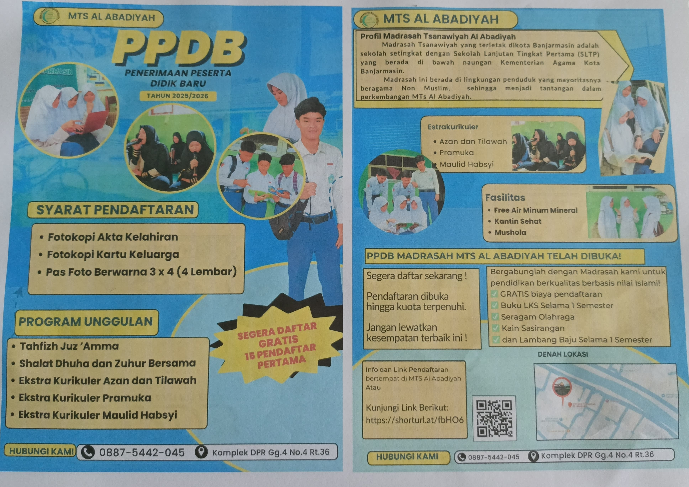

MTs Al Abadiyah telah menjadi tempat lahirnya generasi beriman dan berilmu. Dengan perpaduan pendidikan agama dan akademik, sekolah ini membentuk insan cerdas yang berakhlak mulia.dimulai dengan lantunan ayat suci Al-Qur’an, dzikir pagi, serta shalat berjamaah. Kajian tafsir dan hadits menjadi bagian tak terpisahkan dalam membangun keimanan para santri.
Banyak alumni MTs Al Abadiyah yang kini menjadi pendakwah, guru, dan pemimpin di berbagai bidang. Sekolah ini terus berkembang, menghadapi tantangan zaman dengan tetap mempertahankan nilai-nilai Islam dan menerapkan teknologi dalam pembelajaran.
Lebih dari tiga dekade, MTs Al Abadiyah tetap menjadi mercusuar ilmu dan iman. Dengan semangat yang tak pernah padam, sekolah ini terus melahirkan generasi unggul yang siap menerangi masa depan.
MTs Al Abadiyah, tempat ilmu, iman, dan masa depan bertemu.
Penerimaan Peserta Didik Baru
Info dan Link Pendaftaran:
@link_ppdb_2025
Kunjungi Instagram kami untuk informasi lainnya: @mts_al_abadiyah